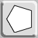
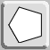
Concentric Program Notes
This is a program to create concentric rings of polygons, and to allow you to decorate them in the Islamic style. See the paper “Beyond the Great 96” presented at the 2021 Bridges program.
The program is quite self-explanatory. Just push buttons and slide sliders. We start from the left and add columns of tiles to build up a tiling that we will wrap around a central ring.
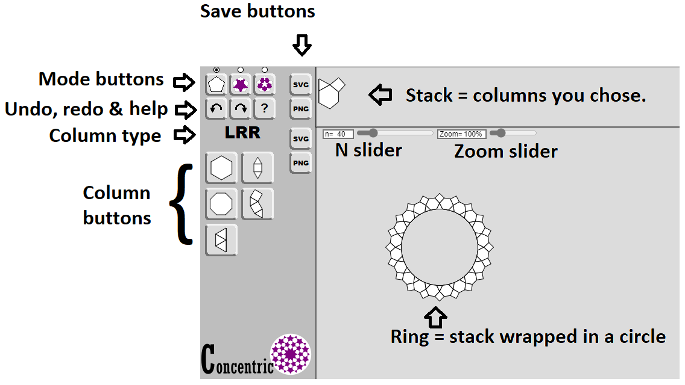
Here’s an example to get you started:
Slide the N slider to 10. (After clicking, you can also use the left and right arrow buttons to do small adjustments.)
Hit these column buttons in order:
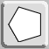
Then the mode button:
This should give you a copy of our logo’s design:

When I want to start a new tiling, I reload the page.
It may help to first choose what how many sides you want in your center n-gon by sliding the N slider.
Column Buttons
The column buttons change type depending on the shape of the edge that needs to be matched. Certain columns fit best with small n. Certain fit best with larger n. Experiment. You can always undo. Some buttons force you to use an even number for n.
The column buttons are grouped by the Left/Right turns that you make traveling along the left edge. You start with the pattern going Straight, with no turns. The left edges will fit against the current tiling. The right edges will be the new outside of the tiling. Here are all the column buttons.
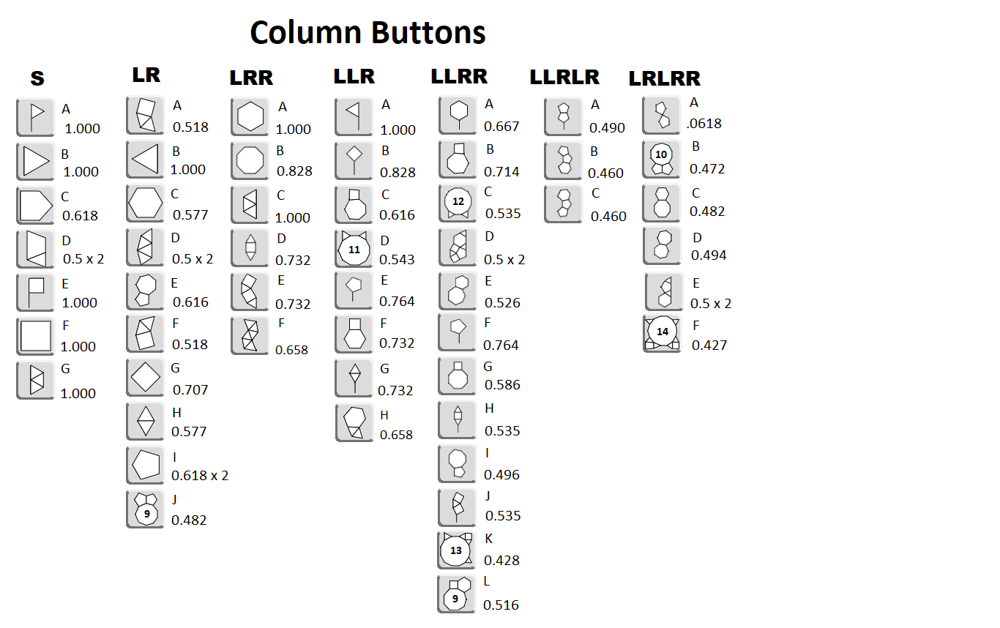
When it comes time to fit in a new column, look at the ring area. You can see how big the angles you need are. The program will squeeze in whatever you tell it to, but the closer the angles, the better the fit, and the nicer the tiling may look.
Depending on the columns you choose, the edge lengths may grow or shrink. It's traditional to try to keep the edge lengths as constant as you can. If you want to decrease the edge length, try finding buttons that have more segments on the right side, or that have a wider angle on the left side. If you want to increase the edge length, find buttons that keep the same number of segments on the right side and use smaller angles on the left side.
If you hover over a button, it will tell you what it does. The column buttons tell you what size the right edge is. This size is given in the list of all column buttons. In general, we want to slowly decrease the size until we reach .5 which is where we usually double the number of sides and restart. Restarting is shown in the list by “x 2”. There are some shapes that go a little below .5. These shapes would work best with a large n. With a small n, we have to get to .5 faster.
For a given tiling, you might try changing the N slider to make the edge lengths match for the inner and the outer edges. This can't do anything for the in-between parts.
Mode Buttons
The mode buttons tell how the tiling is decorated. I prefer to run in base tiling mode so I can see the shapes of the tiles. You can also run in star or rosette mode, if you like.
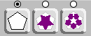
Here is the same tiling in all three modes.
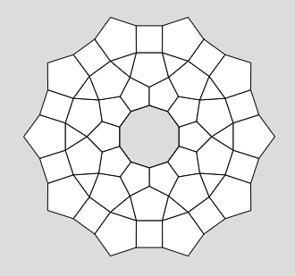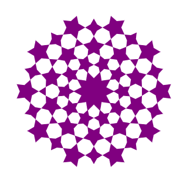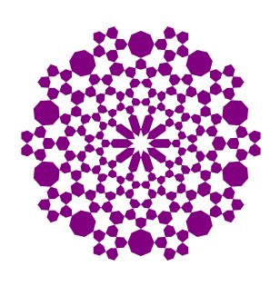
In star mode, an extra slider appears. You can play with the angle if you want. One cool thing that I only noticed after I made the program is that if you use star mode, very small angles and very large angles look similar – but with the colors reversed. So very small angles give you pointy purple stars and a white background. Very large angles give you pointy white stars and a purple background. Here’s a different tiling in star mode with very small and very large angles.
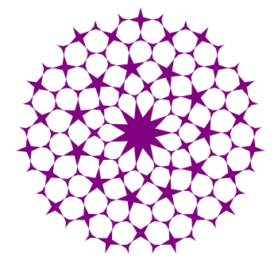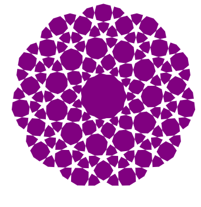
Saving
You can download PNG image files or SVG files of either the stack or the ring with the save buttons.
More examples
Set n = 6. Then use this button:
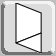
to get this:
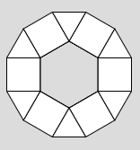
Note that this button doubles the numbers of edges in one step – so it works best with very small n.
Or set n=15.
Then use these four column buttons:
to get this:
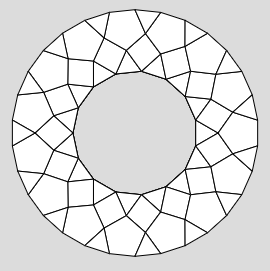
These are both examples of small n.
Here’s an example of large n – the example given in the paper.
Set n = 184.
Choose these buttons:
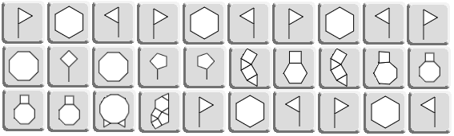
then
to get this big image
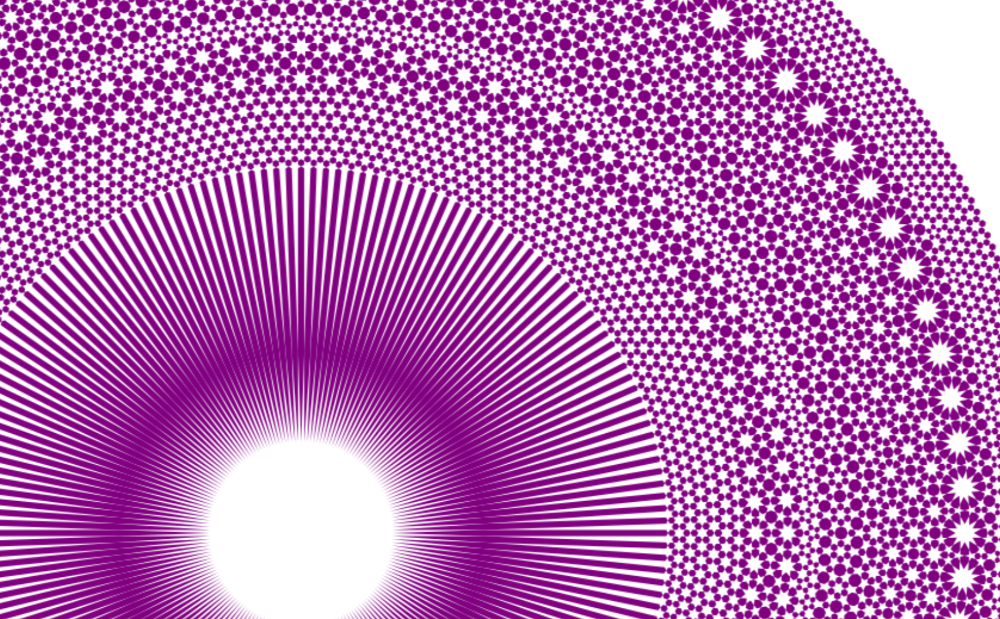
Play with it. Have fun.